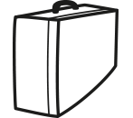

Catálogo Recambios
Catálogo
Soporte
Conócenos
Máquinas de Café
Componentes
Maquinaria Hostelería
Ver/descargar catálogo
Solicitar catálogo
Consulta
Cómo hacer su pedido
Ascaso le ayuda

Nuestra historia
Contacta con nosotros
Vídeos corporativos
Home
Catálogo Online
Ver Catálogos
Solicitar Catálogos
Consulta
Cómo hacer un pedido
Ascaso le ayuda
Contacto
Índice alfabético
|
Descargas globales
Índice alfabético
Ablandadores de carne
Abrelatas manuales
Abrillantadores de cubiertos BESSER VACUUM
Afiladores de cuchillos
Amasadoras FIMAR
Análisis de agua
Armarios de vino
Asadores gyros/kebab FIMAR
Balanzas
Bancadas completas polietileno o duralinox
Bandejas hornos
Bandejas hornos PRIMAX
Baño María eléctrico ATA Serie 600
Baños María eléctricos AMITEK
Baños María eléctricos ATA Serie 700 Performance
Barbacoas piedra lávica a gas AMITEK
Barbacoas piedra lávica a gas ATA Serie 600
Barbacoas piedra lávica a gas Serie 700 Performance
Barra portapedidos
Básculas
Batidoras mezcladoras CEADO
Batidoras trituradoras CEADO
Bobinas film
Bolsas para envasado al vacío BESSER VACUUM
Bombas peristálticas (Abrillantador)
Bombas peristálticas (Jabón)
Brazos trituradores FIMAR
Buffet - Accesorios
Buffet calentadores infrarrojos FIMAR
Cafeteras de filtro
Cajas registradoras CASIO
Calentadores infrarojos
Carros de servicio
Cestas lavavajillas
Chocolateras
Cocinas a gas ATA Serie 600
COCINAS
ATA
Cocinas a gas ATA Serie 700 Performance
Cocinas a gas ATA Serie 700 Solution Line
Cocinas a gas sobremesa 400 ASCASO
Cocinas a gas sobremesa 500/600 AMITEK
Cocinas a gas/eléctricas ATA Serie 900/1100 (Bajo pedido)
Cocinas ATA - Información
Cocinas ATA Serie 600 - Información
Cocinas ATA Serie 700 Performance Line - Información
Cocinas ATA Serie 700 Solution Line - Información
Cocinas eléctricas ATA Serie 600
Cocinas eléctricas ATA Serie 700 Performance
Cocinas eléctricas ATA Serie 700 Solution Line
Cocinas vitrocerámica ATA Serie 600
Cocinas vitrocerámica ATA Serie 700 Performance
Contenedores isotérmicos
Corta mozzarella
Cortador de queso FIMAR
Cortadoras de fiambre
Cortadoras de fiambre AMITEK
Cortadoras de fiambre AMITEK - Información
Cortadoras de huesos, carne y congelados FIMAR
Cortadores de verduras - frutas
Cortaverduras FIMAR
Creperas a gas FIMAR
Creperas eléctricas FIMAR
Cubetas Gastronorm
Cubetas Gastronorm - Información
Cubetas Gastronorm Eco
Cuece pastas a gas ATA Serie 700 Performance
Cuece pastas a gas ATA Serie 700 Solution Line
Cuece pastas ATA Serie 700 Performance (Accesorios)
Cuece pastas eléctrico ATA Serie 600
Cuece pastas eléctrico ATA Serie 700 Performance
Cuece pastas eléctrico ATA Serie 700 Solution Line
Cuece pastas eléctrico FRISTEEL
Cuece pastas eléctricos AMITEK
Cutters FIMAR
Depuradores agua automáticos
Depuradores agua manuales/By-pass
Depuradores filtros agua 3M
Depuradores filtros agua BILT
Depuradores filtros agua BRITA
Depuradores filtros agua EVERPURE
Depuradores filtros agua WATER + MORE
Detector de billetes falsos
Detergentes lavavajillas
Dispensadores de salsas
Dispensadores bobinas film
Dispensadores de bebidas frías
Dispensadores de jabón
Dispensadores de papel
Distribuidores de café/cereales/bebidas/leche Buffet
Dosificadores peristálticos (Abrillantador)
Dosificadores peristálticos (Jabón)
Duchas enrollables MONOLITH
Eliminadores de insectos
Encendedor
Envasadoras al vacío BESSER VACUUM
Envasadoras manuales
Equipamientos de baño
Escarchadores de copas
Espátulas
Estanterías acero inox
Estanterías aluminio y polietileno
Estanterías duralinox
Estantes pared
Exprimidores eléctricos CEADO
Exprimidores eléctricos ECO
Extendedoras de masa pasta-pizza FIMAR
Fabricadores de hielo ITV
Fabricadores de hielo NTF
Filtros agua 3M
Filtros agua BILT
Filtros agua BRITA
Filtros agua EVERPURE
Filtros agua universales
Filtros agua WATER + MORE
Formadoras base de pizza FIMAR
Formadoras pasta fresca FIMAR
Frankfurt
Fregaderos industriales especial lavavajillas
Freidora pastelería
Freidoras a gas ATA Serie 600
Freidoras a gas ATA Serie 700 Performance
Freidoras a gas ATA Serie 700 Solution Line
Freidoras a gas FRISTEEL
Freidoras eléctricas AMITEK
Freidoras eléctricas ATA Serie 600
Freidoras eléctricas ATA Serie 700 Performance
Freidoras eléctricas ATA Serie 700 Solution Line
Freidoras eléctricas ECO
Fry-tops a gas AMITEK
Fry-tops eléctricos AMITEK
Gastronorm cubetas
Gofreras eléctricas AMITEK
Granizadoras
Grifería industrial MONOLITH
Grifería industrial T&S
Grifos de pedal MONOLITH
Grifos de pedal T&S
Grifos desagüe Freidoras
Grifos desagüe Marmitas
Grifos ducha extensibles
Grifos ducha MONOLITH
Grifos ducha T&S
Guantes cocina
Gyros a gas FIMAR
Gyros eléctricos FIMAR
Heladera
Heladería
Hervidores de agua
Horchateras
HORNOS PRIMAX
Hornos a gas gastronomía profesional PRIMAX
Hornos a gas gastronomía/pastelería Easy Line PRIMAX
Hornos a gas pastelería profesional PRIMAX
Hornos eléctricos convección FIMAR
Hornos eléctricos convección humidificador FIMAR
Hornos eléctricos gastronomía profesional PRIMAX
Hornos eléctricos gastronomía/pastelería Easy Line PRIMAX
Hornos eléctricos gastronomía/pastelería Fast Line PRIMAX
Hornos eléctricos pastelería profesional PRIMAX
Hornos microondas plato giratorio/fijo
Hornos pizza a gas FIMAR
Hornos pizza eléctricos ASCASO
Hornos pizza eléctricos FIMAR
Hornos pizza eléctricos MILANTOAST
Imanes para cuchillos
Jarra termos
Lamparas infrarrojos
Lavamanos inox
Lava-mejillones FIMAR
LAVAVAJILLAS / LAVAVASOS / LAVAOBJETOS
ATA
Lavaobjetos ATA Electrónicos Serie ALP
Lavavajillas ASBER 35/40/50
Lavavajillas ATA Electromecánicos Serie AF
Lavavajillas ATA Electromecánicos Serie B
Lavavajillas ATA Electrónicos Serie AL
Lavavajillas ATA línea de carga frontal - Información
Lavavajillas cúpula ATA (Mod. cúpula - Planos de trabajo)
Lavavajillas cúpula ATA Electromecánicos Serie AT
Lavavajillas cúpula ATA Electromecánicos Serie B
Lavavajillas ACCESORIOS
Lavavasos ATA Electromecánicos Serie AL
Lavavasos ATA Electromecánicos Serie B
Lavavasos ATA Electrónicos Serie AL
Lava-verduras FIMAR
Licuadoras CEADO
Limpiador de cubiertos BESSER VACUUM
Máquinas de café ASCASO - Información
Máquinas de café ASCASO ARC
Máquinas de café ASCASO BAR
Máquinas de café ASCASO BARISTA
Máquinas de café ASCASO BASIC
Máquinas de café ASCASO DREAM
Máquinas de café ASCASO KAP
Máquinas de café ASCASO STEEL
Máquinas de cocción al vacío
Máquinas de hielo ITV
Máquinas de hielo NTF
Matainsectos
Microondas plato fijo EUROTEC RIGA
Microondas plato giratorio ECO
Microondas plato giratorio EUROTEC RIGA
Molinos ASCASO
Molinos COMPAK
Molinos FIORENZATO
Muebles cafeteros
Paelleros quemadores a gas
Palas aluminio pizzería
Palas madera pizzería
Palas / Espátulas
Pastelería
Pedales mezcladores MONOLITH
Peladoras de patatas FIMAR
Picadoras de carne (cuchillas y placas)
Picadoras de carne AMITEK
Picadoras de carne FIMAR
Pinzas
Pizzería - Accesorios
Placas calientes y frías
Planchas a gas ATA Serie 600
Planchas a gas ATA Serie 700 Performance
Planchas a gas ATA Serie 700 Solution Line
Planchas a gas sobremesa 400 ASCASO
Planchas eléctricas ATA Serie 600
Planchas eléctricas ATA Serie 700 Performance
Planchas eléctricas ATA Serie 700 Solution Line
Planchas eléctricas sobremesa ASCASO
Planchas grill MILANTOAST
Planchas inducción FIMAR
Planchas vitrocerámica MILANTOAST
Portacuchillos
Prensa hamburguesas AMITEK
Quemador industrial
Quemadores paelleros
Rallador de queso FIMAR
Rascadores plancha
Refrigeradores de vino
Registradoras CASIO
Rejillas hornos
Rejillas hornos PRIMAX
Sacacorchos industriales
Salamandras AMITEK
Salamandras ATA
Sandwicheras
Secadores-Pulidores de cubiertos BESSER VACUUM
Secamanos
Sierra de huesos, carne y congelados FIMAR
Sifones de espuma ISI
Tablas de corte de polietileno
Termómetros
Termos de leche ASCASO
Termoselladoras BESSER VACUUM
Tostadores de cinta MILANTOAST
Tostadores pinzas verticales MILANTOAST
Tostadores resistencias cuarzo/inox MILANTOAST
Tostadores rotativo MILANTOAST
Tratamiento agua
Trituradores de hielo CEADO
Túnel de lavado ATA Serie ATR
Vitrinas calientes
Vitrinas neutras
Vitrinas refrigeradas
Vitrinas refrigeradas grupo remoto
Descargas globales
Si desea descargar todo el
catálogo completo
en pdf, haga click aquí. (50mb)
Para descargar la
Guía Rápida
en pdf, haga click aquí. (5mb)